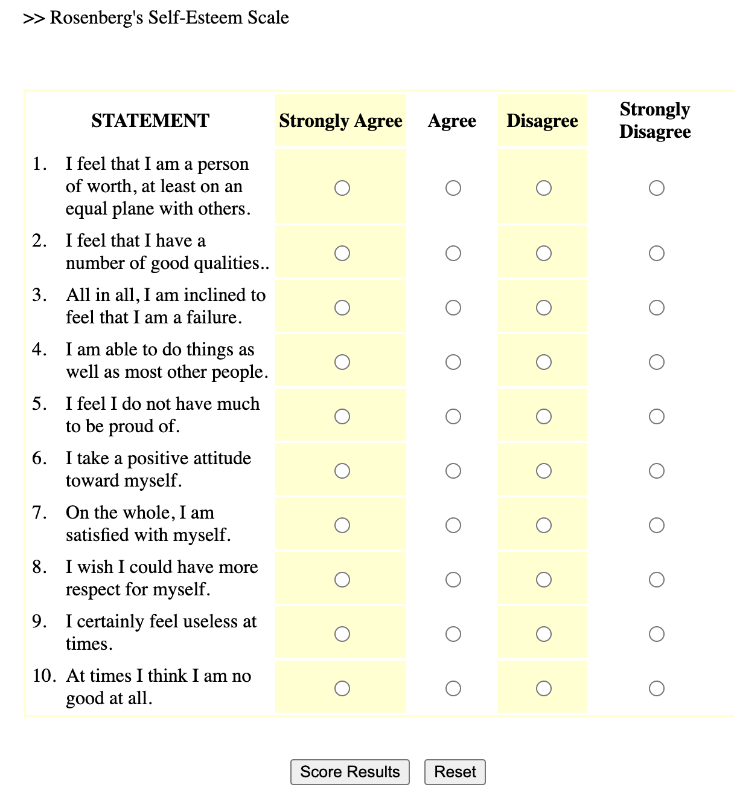
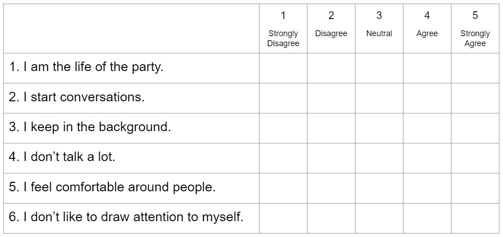
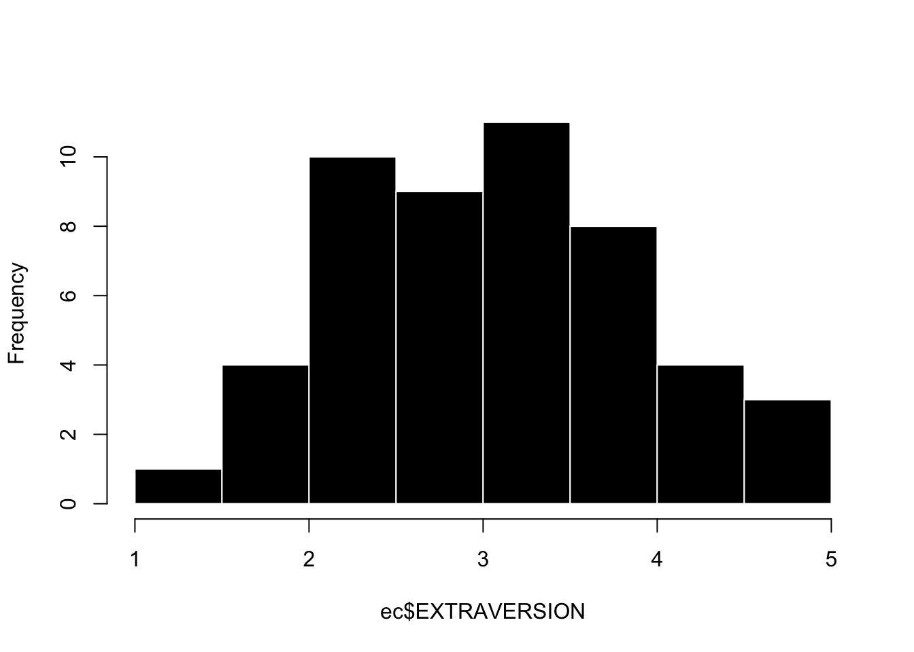
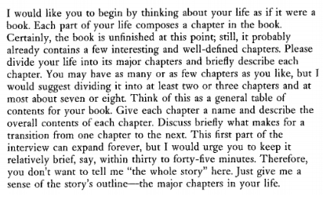
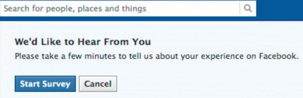
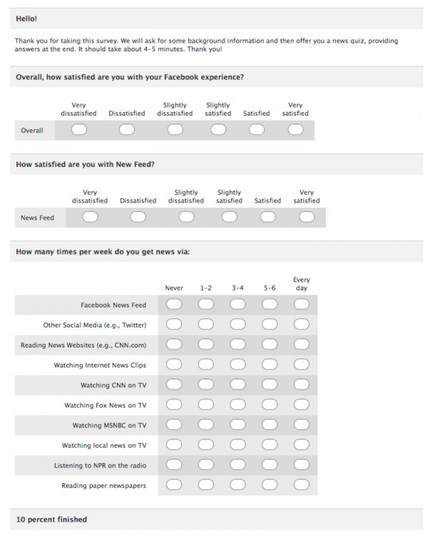
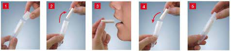

ec <- read.csv("../datasets/ec_data.csv") # Note: make sure to change the *path* in the `read.csv()` function to point R to the correct spot to import the ec dataset from YOUR computer.Measures
This week, you’ll learn about how (and why) a likert scale can be used to define continuous variation, and how to create a likert scale in R.
Part 1 : Likert Scales
Definition & Theory
A likert scale is a common survey method psychologists use to measure continuous variation. Likert scales can be used for self-report surveys (where an individual answers questions about themselves), or given to observers (where an individual answers questions about another person - either someone they know, or someone they are actively observing). For example, to the right is an example likert scale - the Rosenberg Self-Esteem Scale1. Here’s a link to take the survey and get feedback.
1 Rosenberg, M. (1965). Rosenberg Self-Esteem Scale (RSES) [Database record]. APA PsycTests. Here’s a link to take the survey and get feedback.

Below are some common terms we will use when describing likert scale. (There’s a video that goes over these terms with another example below too.)
| Term | Definition | Usage / Example |
| Scale | The variable that you want to measure as a continuous variable. | Self-esteem is often measured with the Rosenberg Self-Esteem Scale (1965) |
| Item(s) | The specific question(s) in the scale. Each item measures some aspect of the variable the researcher is interested in. | The Rosenberg Self-Esteem Scale (RSE; 1965) is a ten item scale, which means it has ten questions about self-esteem. |
| Response Scale | How people answer the scale items. People give a number rating on a fixed range of options with labels. Many 5-point scales include the following labels (1 = Strongly Disagree; 2 = Disagree; 3 = Neutral; 4 = Agree; 5 = Strongly Agree.) | The RSE was originally written to use a 4-point rating scale from 0 (Strongly Disagree) to 3 (Strongly Agree). When Professor includes the RSE in his studies, he might change the response scale to go from 0-4 to so it has an odd-number of answers to allow people to say they are “neutral”. |
Positively- Keyed Item |
An item that measures the high end of the scale, where answering “yes” to the question means you are high on this variable. | “On the whole, I am satisfied with my life” is a positively-keyed item, because answering 4 (Strongly Agree) means the person says they are high in self-esteem. |
| Negatively-Keyed Item | An item that measures the low end of the scale, where answering “yes” to the question means you are low on the variable. | “I certainly feel useless at times” is a negatively-keyed item, because answering 4 (Strongly Agree) means the person says they are low in self-esteem. |
| Reverse Scoring | How researchers “flip” the negatively-keyed items to be positively-keyed. To calculate how to reverse-score an item, you can add the lower and upper limit of the full range. So to reverse-score a response scale that goes from 0 to 4 = 0 + 4 = subtract the negatively keyed items from 4. A response scale that goes from 1 to 15 = 1 + 15 = subtract the negatively keyed items from 16. And so on. This is confusing. We will practice in lecture some more, okay? |
To reverse score the negatively-keyed item, you would subtract the person’s 4 from 4 (since the scale range is 0 to 4, so 0+4 = 4). A response of 4 (Strongly Agree) to the question I certainly feel useless at times means that for this question, the person’s self-esteem would be rated as a 0. POP QUIZ : a survey has a response scale that goes from 1-7. What number would you subtract from in order to reverse score a negatively-keyed item?2 |
2 You would subtract from 8, since 1+7 = 8. So a 7 for a negatively-keyed item on the 1-7 scale would be turned into a 1, since 8-7 = 1
Advantages of Likert Scales
They are easy to administer as a self-report or observational survey, and provide structured data.
The principle of aggregation describes a phenomenon where combining multiple items into one scale will provide a more reliable and continuous measure. Remember, the normal distribution is a theoretical distribution that exists when there are multiple explanations for one variable that occur randomly in a population. The multiple items in a scale are one way to try and measure the multiple random explanations for variation. And indeed, as you’ll see in the R demonstration, when you combine multiple categorical items into one variable, the distribution of the variable looks more normal than any individual item.
Researchers can assess the reliability of the multiple items that were included in the measure. For example, if we are reliably measuring extraversion, then there should be. Cronbach’s (alpha) is a statistic that estimates the internal consistency (reliability) of a scale, and is based on (a) the similarity of people’s responses to the items in a scale (the more similar, the higher the reliability) and (b) the number of items in a scale (sales with many items will tend to have higher cronbach than will likert scales with just a few items.) There’s no official “rule” for what’s considered good or bad alpha, but below are some guidelines:
α > .8 = GREAT! Your scale is reliable
α = .5 - .7 = OKAY! Your scale has low reliability, so something may be wrong with your measure.
α < .5 = UH OH…your scale has really low reliability. Below are a few possible reasons:
your scale only has a few items: remember, that α is influenced by the number of items in your scale; so scales with a few items will almost certainly have a low alpha reliability.
were the items in scale incorrectly coded (reverse scored items)?
is the scale measuring different things (no consistency)? It could be that your scale isn’t very precise, and is measuring different variables.
Video Example : The Extraversion Scale
Here’s another example of a likert scale - Extraversion items adapted from Big Five Inventory 2 (Soto & John, 2017).

Watch This Video.
Check-In
Part 2 : Creating a Likert Scale in R
I Like To Read!
In this demonstration, we’ll use the class dataset to create a scale to measure differences in EXTRAVERSION. To do this, we will need to complete the following steps:
1. Import and Check the Data.
First, we’ll need to load the data, and check to make sure it is imported correctly. You can access these data here - personality measures of extraversion (how social people say they are) and conscientiousness (how organized people say they are).
2. Create a data.frame that isolates the items in the scale.
Now, I’ll just create a smaller dataframe of the variables that I want to work with for the extraversion scale. From the codebook, I see that the extraversion scale is made up of the items e1-e6r, with the r indicating items that are negatively-keyed.
extra.df <- data.frame(ec$e1, ec$e2, ec$e3, # the three positively keyed items
ec$e4r, ec$e5r, ec$e6r) # the three negatively keyed items
head(extra.df) # this code checks my work and make sure my newly created dataframe in fact contain the positively and negatively keyed items ec.e1 ec.e2 ec.e3 ec.e4r ec.e5r ec.e6r
1 2 3 2 4 4 4
2 2 4 3 3 3 4
3 3 4 2 4 5 4
4 2 3 2 3 4 3
5 5 5 5 1 1 1
6 1 3 3 3 4 43. Correctly reverse-score the negatively-keyed items in the scale.
Now, I need to reverse-score the negatively keyed items. Since the scale ranged from 1 to 5, I need to subtract the negatively keyed items from 6 to reverse the scoring (so 6 - 1 = 5, and 6 - 5 = 1.)
Note that you can calculate how to reverse-score an item by adding the lower and upper limit of the full range. So to reverse-score a response scale that goes from 0 to 4 = 0 + 4 = subtract the negatively keyed items from 4. A response scale that goes from 1 to 15 = 1 + 15 = subtract the negatively keyed items from 16. And so on.
I can again use the head() function to check my work and confirm that I successfully reverse scored the variables. Note that you can reverse-score the variables in one step; I don’t really do this twice when creating a scale :)
extra.df <- data.frame(ec$e1, ec$e2, ec$e3, # the three positively keyed items
6-ec$e4r, 6-ec$e5r, 6-ec$e6r) # the three negatively keyed items
head(extra.df) # this code checks my work and make sure my newly created dataframe in fact contain the positively and negatively keyed items. Note that there seems to be more consistency in the scores for each individual - people who are low in e1-e3 are now also low in e4r - e6r. ec.e1 ec.e2 ec.e3 X6...ec.e4r X6...ec.e5r X6...ec.e6r
1 2 3 2 2 2 2
2 2 4 3 3 3 2
3 3 4 2 2 1 2
4 2 3 2 3 2 3
5 5 5 5 5 5 5
6 1 3 3 3 2 24. Evaluate the reliability of the items in this variable.
I’ll examine the internal reliability of the scale. Internal reliability measures how consistent people’s responses were for each of the items of the scale. I’m hoping for a high value.
library(psych) # make sure you install.packages("psych") first!
alpha(extra.df)
Reliability analysis
Call: alpha(x = extra.df)
raw_alpha std.alpha G6(smc) average_r S/N ase mean sd median_r
0.87 0.87 0.88 0.52 6.6 0.03 3.1 0.88 0.49
95% confidence boundaries
lower alpha upper
Feldt 0.80 0.87 0.92
Duhachek 0.81 0.87 0.92
Reliability if an item is dropped:
raw_alpha std.alpha G6(smc) average_r S/N alpha se var.r med.r
ec.e1 0.88 0.88 0.89 0.59 7.2 0.028 0.017 0.58
ec.e2 0.85 0.85 0.85 0.53 5.6 0.035 0.029 0.51
ec.e3 0.82 0.82 0.83 0.48 4.6 0.040 0.025 0.45
X6...ec.e4r 0.85 0.85 0.86 0.53 5.7 0.035 0.032 0.51
X6...ec.e5r 0.80 0.81 0.81 0.46 4.3 0.044 0.020 0.46
X6...ec.e6r 0.86 0.86 0.86 0.55 6.1 0.032 0.020 0.53
Item statistics
n raw.r std.r r.cor r.drop mean sd
ec.e1 50 0.63 0.63 0.52 0.47 2.9 1.18
ec.e2 50 0.75 0.77 0.72 0.65 3.6 0.91
ec.e3 50 0.87 0.88 0.87 0.79 3.3 1.12
X6...ec.e4r 49 0.77 0.76 0.69 0.64 3.3 1.22
X6...ec.e5r 49 0.91 0.91 0.92 0.86 3.0 1.16
X6...ec.e6r 50 0.73 0.72 0.67 0.59 2.7 1.21
Non missing response frequency for each item
1 2 3 4 5 miss
ec.e1 0.14 0.26 0.28 0.24 0.08 0.00
ec.e2 0.04 0.06 0.30 0.50 0.10 0.00
ec.e3 0.06 0.20 0.30 0.30 0.14 0.00
X6...ec.e4r 0.04 0.31 0.20 0.24 0.20 0.02
X6...ec.e5r 0.08 0.27 0.35 0.16 0.14 0.02
X6...ec.e6r 0.16 0.34 0.20 0.22 0.08 0.00There’s a LOT going on in this code, but I’m looking at the number underneath raw_alpha, which shows me that this scale is reliable. This is good, and would be something that I would report when describing the measure of Extraversion.
The rest of the code output gives you other statistics on the scale (e.g., the mean or standard deviation), and shows you what the reliability of the scale would be if you removed one of the items from the scale. This can be useful for diagnosing whether there was an issue with your code (e.g., did you forget to reverse-score one item?) or with the scale (e.g., is one of your items actually measuring something other than extraversion?) In this case, the reliability doesn’t change much if we remove any of the items.
5. Use the rowmeans() function to create a new variable that is the average of each person’s items.
Now, I need to create one variable that is combines all the items into one number. To do this, I could either add up each person’s 6 extraversion scores, or take the average. The convention is usually to take the average for personality variables - not sure why…a cultural difference.
So we will use the rowMeans() function to do this. There are two methods for this.
- Method #1 (Default - very conservative approach) : only calculate an average score if people answered every item in the dataset. This completely removes a person from the dataset, even if they answered 5/6 of the questions.
this calculates the average of these items for each row (individual) in the dataset. This is the measure of extraversion for each person. Notice that there is some missing data - the default for this code is that a person’s data will be totally removed if they didn’t answer all the questions in the scale. This is a very conservative way to handle missing data.
rowMeans(extra.df) [1] 2.166667 2.833333 2.333333 2.500000 5.000000 2.333333 3.333333 3.666667
[9] 2.833333 2.333333 2.000000 3.500000 4.166667 2.333333 4.500000 3.166667
[17] NA 3.666667 3.000000 3.666667 NA 3.500000 3.666667 4.000000
[25] 1.666667 4.833333 3.666667 3.833333 3.166667 3.000000 2.500000 2.833333
[33] 1.000000 2.833333 3.333333 3.000000 3.166667 2.166667 2.333333 3.166667
[41] 1.833333 3.000000 3.166667 4.333333 4.166667 3.500000 3.500000 2.166667
[49] 4.833333 1.666667- Method #2 (more liberal approach) : this removes missing data from specific items, so the average score will be calculated even if the person didn’t answer some of the items.
rowMeans(extra.df, na.rm = T) # adding na.rm = T as an argument. [1] 2.166667 2.833333 2.333333 2.500000 5.000000 2.333333 3.333333 3.666667
[9] 2.833333 2.333333 2.000000 3.500000 4.166667 2.333333 4.500000 3.166667
[17] 3.800000 3.666667 3.000000 3.666667 2.800000 3.500000 3.666667 4.000000
[25] 1.666667 4.833333 3.666667 3.833333 3.166667 3.000000 2.500000 2.833333
[33] 1.000000 2.833333 3.333333 3.000000 3.166667 2.166667 2.333333 3.166667
[41] 1.833333 3.000000 3.166667 4.333333 4.166667 3.500000 3.500000 2.166667
[49] 4.833333 1.666667- IMPORTANT In order to save the output as a variable, you will need to assign the output of rowMeans() to a new object, ideally one that is saved as part of the original dataset.
ec$EXTRAVERSION <- rowMeans(extra.df, na.rm = T) # this saves the scales to the dataset as a new object (which I'm calling EXTRAVERSION). I like to name variables that I create in ALL CAPS. Note that I've chosen to be less conservative in how I handle missing data.6. Graph this variable and interpret the graph (what do you learn)?
Okay, we have a scale! And this scale should measure continuous variation! Let’s graph it. I’m looking for a graph that ranges from 1 to 5 (since that was the limit of my response scale), and something that looks mostly normally distributed.
hist(ec$EXTRAVERSION, main = "", col = 'black', bor = 'white')
This looks good. When I look at this graph I see the following things:
the range of the scale goes from 1 to 5. This is good, because the response scale ranged from 1 to 5. An incorrect range would suggest that I made a mistake when analyzing the data.
the graph is mostly normally distributed. This is also good, and expected for a personality variable like Extraversion. If there was some extreme skew, I might again think that I made a mistake when creating the scale, or wonder if there was some non-random variable that was influencing students’ extraversion scores (for example, the entire cohort of students took an improv class during orientation).
there is some slight positive / right skew - there are a few students who are maxed out on extraversion. What’s up extraverts [waves furiously]. Not sure why that is, but some deviation from normality is always expected! Ooh, one theory is that this survey was given out at the end of a three-hour lecture, so maybe students who were more extraverted were more likely to stick around in a large classroom setting, and thus more likely to be included in the survey. This is an example of sampling bias.
I Like To Watch Videos : Creating a Likert Scale
- Here’s a link to the Rscript I used in the video
Part 3 : Data is Hard in a Soft Science
One of the challenges psychologists face in their attempts to be a REAL SCIENCE ™ is that their data is particularly hard to collect. Unlike physical variables like temperature or mass, psychological variables are often internal to people, and defined by mental states that are difficult to observe. As we saw in lecture, even a “simple” expressed behavior like an interruption can be very difficult to measure with high degrees of reliability and validity that we would hope. For a more complex variable such as depression, the task might seem impossible. Indeed, a large part of psychological research is engaging in debate and scholarship about how to best operationalize variables of interest (e.g., how should we define or measure depression?)
A full discussion of the different types of methods psychologists use to collect data is beyond the scope of this author. However, below I’ve tried to outline a few different approaches psychologists take, commenting on their benefits and limitations so you can begin to critically think about whether these methods are, in fact, getting at “THE TRUTH” of what people (or non-human animals) are like.
Self-Reports
One of the simplest ways to collect data on an individual is just to ask them what they are like, and have the person report on themselves (a self-report). There are two different approaches to getting self-reports - survey methods and qualitative interviews.
Qualitative Interviews
One way to get individuals to tell you what they are like is through a structured interview where researchers ask open-ended questions. One such example of this is the McAdams Life Narrative3. In this structured interview, a trained research assistant asks a set of broad questions to participants over the course of 1 to 3 hours. The research assistant is advised to “feel free to skip some of these questions if they seem redundant or irrelevant, and should follow up with other questions as needed “ but also to “not adopt an advisory or judgmental role, but should instead serve as an empathic and encouraging guide and an affirming sounding board.”
3 McAdams talks about his work in this popular press interview and writes about it in this scientific journal review article.
4 Here’s a link to the full narrative instructions if you want to do the whole thing; it’s a great way to know someone.
Below is an excerpt from the first part of the interview - if you are comfortable, please share your chapters on the Chapter 4 Discord thread!4

Survey Methods
Qualitative interviews are not very common in psychological research, because they take a lot of time to conduct, and then more time to convert people’s open-ended responses into data (a form of behavioral coding, described in more detail below).
Instead, the majority of self-reports come from surveys. Read about these below.
| Definition | A questionnaire where individuals answer specific questions about themselves on a structured rating scale. |
| Example | “On a scale from 1 (Strongly Disagree) to 5 (Strongly Agree), how satisfied with your life are you right now?” |
| Benefits |
|
| Limitations |
|
5 Indeed, our society decides what forms of cheating are acceptable.
Self-reports have a bad reputation in psychology, particularly because of the ability for people to engage in self-enhancement/diminishment or self-insight bias. However, they are a very powerful, and very commonly used method of assessment, even for studies where researchers are able to observe other types of data.
For example, despite all the behavioral data that powerful technology companies like Facebook/Instagram/Meta, TikTok, Twitter/X, etc. collect, you’ve probably seen them ask you to answer some survey. They care about you6, and know that asking you questions about yourself is an important way to show that level of care.
6 …and your clicking on advertisements; hey, it’s hard to distinguish the two really…
Below is one example from some survey when I used to be on Facebook. If they changed their graphic design since I was last on, it’s probably because of some survey feedback they received.


Observations
Often, self-reports are insufficient to capture what a person is like, or researchers are studying individuals who cannot give self-reports, such as infants, people with disabilities, or non-human animals.7
7 If I was a billionaire, I’d fund a team of psychologists to train monkeys to answer surveys. this is maybe why I am not a billionaire. that and the whole “intergenerational wealth” thing / chosen teaching career / lack of a desire to crush others and extract as much wealth from them…hard to know which factor is at play. Life is complex! Let me know if you are a billionaire and want to fund some other ideas / subscribe to my newsletter.
Read about some common forms of observation methods below.
| Definition | Observational methods refer to ways in which another individual generates data on the target person of interest. |
| Examples | Informant Reports. Informant reports are a special form of surveys, where researchers ask friends, family, or strangers to answer survey questions about another person. This is technically observational data, since the people answering the surveys are basing their judgments on their observations of the individual. | Behavioral Data. When the variables of interest are physical, then researchers can use measurement tools to directly observe the behavior. For example, researchers wanting to measure stress might measure cortisol by taking samples of saliva from the cheek; researchers wanting to understand the brain look to voxel activation with fMRI, or cortical neuron activation with EEG.  | Behavioral Coding. Sometimes, it’s easier to have research assistants observe the physical behaviors of interest. For example, y’all served as behavioral coders when you counted the number of interruptions (a behavior!) Other times, research assistants will observe real-life interactions and observe variables such as time spent talking, distance between participants, or provide ratings of how much emotion or anxiety the person seemed to be expressing (using a rating scale). The “strange situation” task (where a parent leaves the room and researchers observe what a child does) is another example.8 |
| Benefits |
|
| Limitations |
|
8 You can compare this child’s reaction to this child’s reaction. What do you observe? How would you quantify these observations and turn them into cold, hard data?
TLDR : there are lots of different methods to measure what individuals are like, and for your final project you probably will want to give people self-report surveys to keep things simple for this very first study!
Quiz 4.
Note : Creating likert scales and working with z-scores is hard, and takes practice. So I went ahead and uploaded a video key for Quiz 4 (as part of the quiz assignment).
You should try to take the quiz on your own - good to have a little bit of struggle! - and use the video key as a guide to learn. We will continue to practice over the next few weeks; this is the last new big topics in R we will learn before the R Exam.
Yeah!